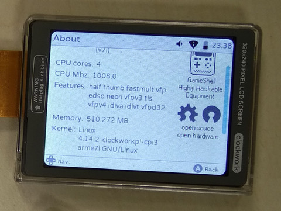

步驟如下：
$ cd
$ git clone https://github.com/clockworkpi/Kernel
$ git clone https://github.com/clockworkpi/USB-Ethernet
$ wget https://mirrors.edge.kernel.org/pub/linux/kernel/v4.x/linux-4.14.2.tar.gz
$ tar xvf linux-4.14.2.tar.gz
$ mv linux-4.14.2 b
$ cp b/arch/arm/configs/clockworkpi_cpi3_defconfig b/.config
$ cp Kernel/cpi3-linux_4_14_2.patch .
$ cp Kernel/usb_ethernet.patch .
$ patch -p0 < cpi3-linux_4_14_2.patch
patching file b/arch/arm/boot/dts/Makefile
patching file b/arch/arm/boot/dts/sun8i-r16-clockworkpi-cpi3.dts
patching file b/arch/arm/configs/clockworkpi_cpi3_defconfig
patching file b/drivers/base/firmware_class.c
patching file b/drivers/input/misc/axp20x-pek.c
patching file b/drivers/leds/leds-gpio.c
patching file b/drivers/mfd/axp20x.c
patching file b/drivers/mfd/sun6i-prcm.c
patching file b/drivers/video/backlight/Kconfig
patching file b/drivers/video/backlight/Makefile
patching file b/drivers/video/backlight/kd027_lcd.c
patching file b/drivers/video/backlight/ocp8178_bl.c
patching file b/drivers/video/fbdev/core/fbcon.c
patching file b/drivers/video/logo/logo_linux_clut224.ppm
patching file b/sound/soc/sunxi/sun4i-i2s.c
patching file b/sound/soc/sunxi/sun8i-codec-analog.c
patching file b/sound/soc/sunxi/sun8i-codec.c
$ patch -p0 < usb_ethernet.patch
patching file b/arch/arm/configs/clockworkpi_cpi3_defconfig
$ mv b gameshell_kernel-4.14.2
$ cd gameshell_kernel-4.14.2
$ make ARCH=arm CROSS_COMPILE=arm-linux-gnueabihf-
$ mkimage -A arm -O linux -T kernel -C none -a 0x40008000 -e 0x40008000 -n "Linux kernel" -d arch/arm/boot/zImage uImage
完成
